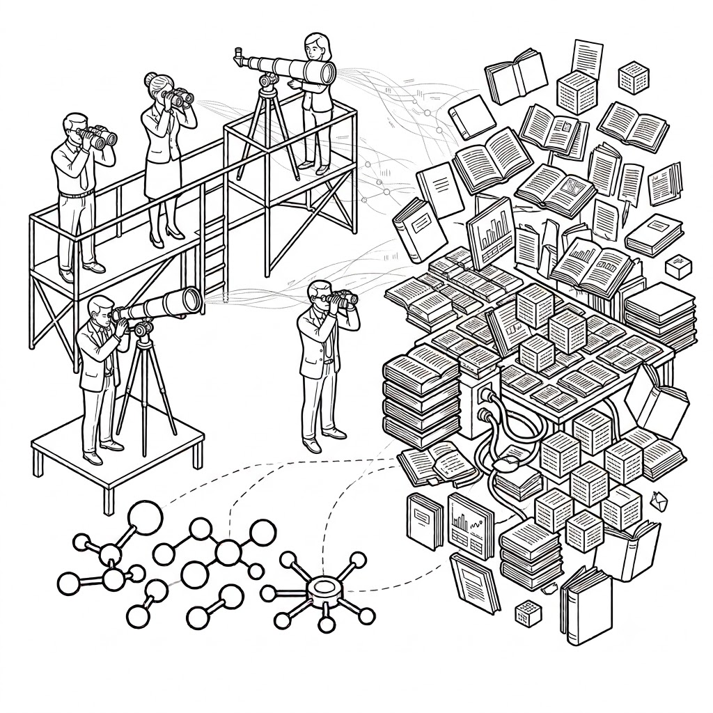

Mobiliser petits et grands modèles de langage dans les démarches de recherche en SHS : de la théorie à la mise en œuvre avec le logiciel ActiveTigger
Exploration, annotation, classification : l'analyse de corpus textuels assistée par l'IA
Université Paris 1 Panthéon-Sorbonne · Vendredi 10 juillet 2026
Objectifs pédagogiques
Comprendre Repères conceptuels
- Comprendre les principales approches d'analyse de corpus textuels avec l'IA.
- Distinguer les usages de l'apprentissage supervisé et non supervisé.
- Distinguer les grandes familles de modèles : BERT, LLM, modèles spécialisés, ouverts ou propriétaires.
Pratiquer Mise en œuvre avec ActiveTigger
Mettre en œuvre ces notions avec le logiciel expérimental ActiveTigger :
- Entraîner, évaluer, améliorer un classifieur à partir d'un corpus annoté.
- Comparer BERT et LLM : performances, coûts, cas d'usage.
- Utiliser ActiveTigger pour explorer, annoter, automatiser.
- Identifier les méthodes adaptées à son corpus et à sa question de recherche.
Introduction
Qu'est-ce qu'ActiveTigger ?
Logiciel libre d'annotation collaborative de texte pour les sciences sociales computationnelles.
- Développé par Julien Boelaert, Étienne Ollion et Émilien Schultz.
- Fine-tuning de classifieurs encodeurs, topic modeling avec BERTopic, accès à des IA génératives.
- Fonctionnalité centrale : l'active learning, qui réduit le temps d'annotation nécessaire.
Pour les SHS
Gratuit, en français, pas besoin de coder, mutualisé entre équipes.
Un cas d'usage en SHS
- Étienne Ollion a utilisé cette méthode pour mesurer la part des publications scientifiques qui portent sur le genre.
- Résumés d'articles annotés à la main → classifieur entraîné → classement de l'ensemble du corpus.
Le principe
Annoter un échantillon → entraîner un classifieur → l'appliquer à une échelle qu'une lecture humaine seule ne permettrait pas.
Hébergement et accès
Instance déployée par notre équipe sur un serveur cloud → solution temporaire, en attendant un possible déploiement Paris 1.
Accès après la formation → sur réservation auprès de la cellule SIINR.
Les données
Construire un jeu de données, puis l'annoter.
Construire un jeu de données
| Méthode | Avantages | Limites |
|---|---|---|
| À la main (tableur) | Contrôle total, aucune compétence technique requise | Lent, difficile à faire tenir à l'échelle |
| Avec du code (Python) | Flexible, reproductible, versionnable | Nécessite de coder |
| Low code (Claude, Langflow) | Accessible sans coder, rapide à prototyper | Moins de contrôle fin, dépendance à un outil tiers |
Le corpus de démonstration
Presse féminine française, Belle Époque.
- Source : Internet Archive (archive.org) → indépendant de Gallica/BnF. Domaine public, OCR ancien et bruité.
- Femina (1901, 1908)
- Journal des dames et des modes (1913)
Question de recherche
Quelle part de ces journaux est occupée par la publicité, face au contenu rédactionnel ?
Éditorial vs Publicité
Pour chaque extrait, une seule question : qui parle, et dans quel but ?
Éditorial
produit par la rédaction- Article, mode, chronique, critique, fiction
- Annonce du journal lui-même (abonnements, conférences, concours)
Publicité
réclame pour un tiers- Marque ou commerçant (cosmétique, corsetier, horloger...)
- Produit ou service à vendre
Repérer Éditorial et Publicité
Signes de Publicité
au moins un présent- Nom de marque ou de commerçant mis en avant
- Un prix (« 250 fr. »)
- Adresse, téléphone, instruction pour commander
- Mode d'emploi d'un produit
Signes d'Éditorial
contenu rédactionnel- Mode décrite sans marque/prix/adresse (créateur crédité)
- Récit, dialogue, chronique, critique
- Annonce d'une activité du journal lui-même
Cas piégeux
- Annonce du journal sur ses propres activités → Éditorial, même si le ton est promotionnel.
- Publicité déguisée en essai (réflexion philosophique qui glisse vers un produit) → regarder si l'extrait fait partie d'une séquence publicitaire plus large.
- Texte trop dégradé par l'OCR pour trancher → Éditorial par défaut (classe majoritaire, erreur moins coûteuse).
Préambule : les notebooks Jupyter
Un document interactif qui mélange texte explicatif et cellules de code, exécutées une par une : pas besoin de tout comprendre, on modifie quelques paramètres puis on exécute les cellules dans l'ordre.
| Option | Où ça tourne |
|---|---|
| Binder (aujourd'hui) | Dans le navigateur, sur des serveurs mutualisés gratuits, rien à installer. |
| Google Colab | Dans le navigateur, sur les serveurs de Google, rien à installer. |
| Anaconda Navigator | Sur votre ordinateur, interface graphique, tout en local. |
| JupyterLab Desktop | Sur votre ordinateur, application autonome, tout en local. |
Le notebook decoupage_corpus.ipynb
- Formats acceptés :
.docx,.odt,.pdf,.md,.txt. - Découpe chaque document en extraits, sans jamais couper une phrase.
- Sortie : un CSV avec une colonne
text(l'extrait) et une colonnefile_name(le document d'origine). - Exécutable en ligne ou en local (options vues juste avant).
À savoir
Le découpage se fait ici en nombre de caractères (500 par défaut), pas en tokens. Le principe reste le même que le rappel qui suit : segmenter sans dépasser une limite.
Rappel : qu'est-ce qu'un token ?
- Token ≠ mot ≠ caractère → sous-unité de texte (tokenizer)
- ≈ 100 tokens pour 75 mots en français
- Contexte (fenêtre) → souvent 512 tokens maximum (BERT)
Construction du corpus, étape par étape
- Script → télécharge le texte OCR brut de chaque volume (API Internet Archive, cache locale).
- Nettoyage léger : en-têtes légaux et bruit OCR supprimés.
- Chaque volume → un fichier
.txtséparé. decoupage_corpus.ipynb→ segmente en extraits → deux fichiers distincts (à suivre).
Deux fichiers, deux usages
Fichier annotation
750 extraits- Importé dans ActiveTigger
- Sert à l'annotation et à l'entraînement du classifieur
Fichier inférence
250 extraits- Mis de côté, jamais vu pendant l'annotation
- Sert plus tard à tester le classifieur entraîné (partie III.4)
Ajouter le corpus : train / validation / test
Dès l'import du fichier, avant même d'annoter : combien de lignes réserver à chaque ensemble ?
Ajouter le corpus : graine et embeddings
La phase d'annotation : précautions
- Qualité de l'annotation → qualité de tout ce qui suit (classifieur, comparaison LLM).
- À plusieurs : une grille de codage partagée, testée avant l'annotation en masse.
- Discuter les désaccords → réviser la grille si besoin.
- Pas d'indicateur d'accord inter-annotateurs intégré : à faire à la main.
Codebook et partage
Rédiger les guidelines dans l'outil (Codebook, exportable en markdown) → partager le projet.
Annoter efficacement dans ActiveTigger
- Interface dédiée, raccourcis clavier, suivi de la progression de l'équipe.
- Rechercher un mot ou une expression dans les extraits → annoter d'un coup tous ceux qui le contiennent.
- Peut aussi proposer les extraits à annoter en priorité → ceux qui aideront le plus le modèle (active learning, III.5).

Exploration du jeu de données
Embeddings, clustering, topic modeling.
Rappel : les embeddings
- Définition : représentation vectorielle dense d'un texte, où la proximité géométrique reflète une proximité sémantique. En français, on parle aussi de plongements lexicaux.
- Ces représentations sont apprises lors du pré-entraînement (vu module 1).
Le clustering
- Rappel : BERT produit des représentations contextuelles (embeddings).
- Clustering → regroupe les documents proches dans l'espace des embeddings, sans étiquette préalable.
Non supervisé, à la différence du classifieur de la partie III.
Points proches dans l'espace des embeddings, regroupés automatiquement
Le topic modeling avec BERTopic
Chaque cluster résumé par ses mots-clés (c-TF-IDF) → un "topic".
Ce cluster peut aussi être qualifié par ses mots les plus fréquents, ou directement par un LLM à qui on soumet quelques extraits représentatifs.
UMAP et HDBSCAN, en bref
Modèles d'embedding pour le topic modeling
| Modèle | Ce que c'est |
|---|---|
| Qwen/Qwen3-Embedding-0.6B | Développé par Alibaba (équipe Qwen), 2025. 0,6 milliard de paramètres, multilingue. |
| Jina embeddings (text small) | Développé par Jina AI. Quelques dizaines de millions de paramètres ("small"), multilingue. Le même modèle qu'à l'import du corpus (partie I). |
| all-mpnet-base-v2 | Développé par Microsoft (architecture MPNet), diffusé via la librairie sentence-transformers. Environ 110 millions de paramètres, entraîné surtout en anglais. |
Le topic modeling en SHS
Espace réservé : exemples de projets à compléter.
Entraîner un classifier
De l'annotation au modèle fine-tuné.
De l'annotation au classifieur
[0.12, −0.47, 0.88, …][0.91, 0.05, 0.04]- Texte déjà encodé → couche de classification ajoutée par-dessus → un score par catégorie.
- Fine-tuning : poids pré-entraînés, ajustés à faible taux d'apprentissage. Tous les poids bougent, y compris l'attention.
Les modèles BERT proposés par ActiveTigger
Model base : le modèle pré-entraîné choisi comme point de départ du fine-tuning. "Base" désigne aussi une taille de modèle (contre large ou small).
| Modèle | Description |
|---|---|
| camemBERT | Développé par l'Inria, pré-entraîné sur corpus français. Le choix par défaut le plus sûr en français. |
| modernBERT | Architecture modernisée (2024), fenêtre de contexte large (jusqu'à 8192 tokens). Essentiellement anglophone à l'origine. |
| flauBERT | Autre BERT français (CNRS), performances proches de camemBERT. Bon point de comparaison. |
| RoBERTa | Version optimisée de BERT, à l'origine anglophone. Pertinent surtout sur un corpus anglais ou multilingue. |
| distilBERT | Version compressée (environ 40% de paramètres en moins). Plus rapide, léger coût en performance. |
Les paramètres d'entraînement
Configuration conseillée
Cas d'usage classiques en SHS
- Analyse de sentiment
- Reconnaissance d'entités nommées
- Classification thématique
- Détection de discours de haine
- Stance detection (positionnement dans un débat)
Équilibre des classes
- Option : même nombre de textes par catégorie dans le jeu d'entraînement.
- Ça dépend du corpus : catégorie rare → forcer l'équilibre aide, mais réduit le volume total d'entraînement.
- Notre corpus : 83,7 % Éditorial / 16,3 % Publicité → un déséquilibre normal, à ne pas forcer en reclassant des cas ambigus.
Taille du jeu de données : y a-t-il une taille idéale ?
Non, mais quelques repères.
- Minimum : une dizaine d'exemples annotés par catégorie pour démarrer.
- En pratique : des dizaines à quelques centaines par catégorie pour de bonnes performances.
- Catégorie ambiguë → plus d'exemples nécessaires.
Une approche concrète
Petit lot annoté → regarder la performance par catégorie → annoter en priorité là où le modèle se trompe (rôle de l'active learning, III.5).
Surveiller l'entraînement : la perte (loss)
Pendant le fine-tuning, on observe deux courbes.
Repérer le sur-apprentissage
Ça progresse
signe positif- Train loss et eval loss diminuent toutes les deux.
Sur-apprentissage
signe d'alerte- Train loss baisse, mais eval loss remonte : le modèle mémorise au lieu de généraliser.
F1, précision, rappel : les définitions
F1, précision, rappel : un exemple
Catégorie "Publicité" (la minoritaire), jeu de test de 200 extraits dont 50 en font vraiment partie.
| Prédit "publicité" | Prédit "éditorial" | |
|---|---|---|
| Réellement "publicité" (50) | 40 (vrais positifs) | 10 (faux négatifs) |
| Réellement "éditorial" (150) | 5 (faux positifs) | 145 (vrais négatifs) |
- Précision : sur les 45 extraits prédits "publicité", 40 l'étaient vraiment, soit 0,89.
- Rappel : sur les 50 extraits réellement "publicité", 40 ont été retrouvés, soit 0,80.
- F1 : moyenne harmonique des deux, environ 0,84.
Précision ou rappel ?
Favoriser le rappel
ex. modération de contenu- Mieux vaut sur-détecter, quitte à avoir plus de faux positifs.
Favoriser la précision
ex. action coûteuse déclenchée- Chaque prédiction positive doit être fiable.
Modèle classique vs BERT
BERT, à l'inverse : texte brut (tokens), GPU recommandé, entraînement plus long.
Entraînement vs inférence
Entraînement
une fois- Ajuste les poids du modèle sur les données annotées.
Inférence
à grande échelle- Applique le modèle figé à de nouvelles données non annotées, sans mise à jour du modèle.
Améliorer les performances du classifieur
- Regarder la performance par catégorie : où le modèle se trompe-t-il le plus ?
- Annoter davantage, en priorité sur les catégories ou les cas où le modèle est le moins bon.
- Rééquilibrer les classes si une catégorie est sous-représentée (III.2).
- Ajuster la configuration d'entraînement (epochs, learning rate, weight decay).
- Essayer un autre modèle de base (III.2).
Accélérer l'annotation avec l'active learning
- Modèle entraîné sur les quelques exemples déjà annotés → prédit une catégorie pour tout le corpus non annoté.
- Repère les cas les plus incertains (ambigus entre deux catégories).
- Ces extraits sont proposés en priorité, plutôt qu'un tirage au hasard.
- Nouvelles annotations → ré-entraînement → le cycle recommence.
Comparaison avec les performances d'un LLM
Inférence, prompt, et vérification humaine.
Choisir un modèle
Interface de chat
ChatGPT, etc.- Simple, mais historique et prompt système opaques.
Modèle via API
appel programmatique- Pas d'historique conservé par défaut, facturé au token.
Autre option : modèle open weight en local → contrôle total, coût matériel, confidentialité.
Point de vigilance : où sont hébergés vos outils ?
La fédération ILaaS
Établissements d'enseignement supérieur → mutualisent leur capacité GPU pour l'inférence. Une forme d'IA souveraine, sur des serveurs de l'administration.
Comparer les modèles avec compar:IA
Ministère de la Culture (beta.gouv.fr) → comparaison en aveugle de deux modèles sur une même question.
Tableau à consulter en direct : taille, ouverture, performances.
comparia.beta.gouv.fr/modeles →
Le prompt : rappels
- In-context learning : le modèle "apprend" à la volée depuis le prompt, sans mise à jour de ses poids (≠ fine-tuning, partie III).
- Zero-shot / one-shot / few-shot → aucun, un, ou plusieurs exemples dans le prompt.
Prompt efficace
Instructions claires, format de sortie explicite (ex. une catégorie précise de la grille), quelques exemples annotés représentatifs en few-shot, itérer.
Traduire sa question de recherche
Écrire un prompt ou une grille d'annotation, c'est le même exercice.
- Avec des humain·es : accord collectif sur des règles, discussion des cas limites.
- Avec un LLM : même travail, mais en aller-retour solitaire face à l'écran.
À anticiper
Écrire → observer les erreurs → corriger le prompt → recommencer. Ce temps d'itération est régulièrement sous-estimé.
Comparaison des performances
- Jupyter notebook de comparaison.
- Même jeu de test → accuracy/F1 du classifieur camemBERT vs LLM en few-shot.
- Coût (temps, argent, empreinte environnementale), pas seulement la performance brute.
Les LLM pour l'annotation
- Human in the loop : l'idée d'ActiveTigger, c'est d'accélérer l'annotation, pas de la remplacer.
- LLM et active learning accélèrent l'annotation, mais l'humain vérifie derrière.
- Jeu de données entièrement annoté par des humains → résultats reproductibles, contrairement à un LLM (varie d'un run à l'autre, ou change de version).
Conclusion et cas d'usages
Vos jeux de données, vos questions.
À vous
Avez-vous des cas d'usage et jeux de données à partager ?
Ce qu'il faut retenir
Reproductibilité
Annotations humaines + classifieur entraîné → résultats stables d'une exécution à l'autre. Un argument scientifique concret pour publier et reproduire le travail.
Contact
Merci pour votre attention !
Pour toute question numérique et science ouverte, à Paris 1 et bientôt à Sorbonne Alliance.